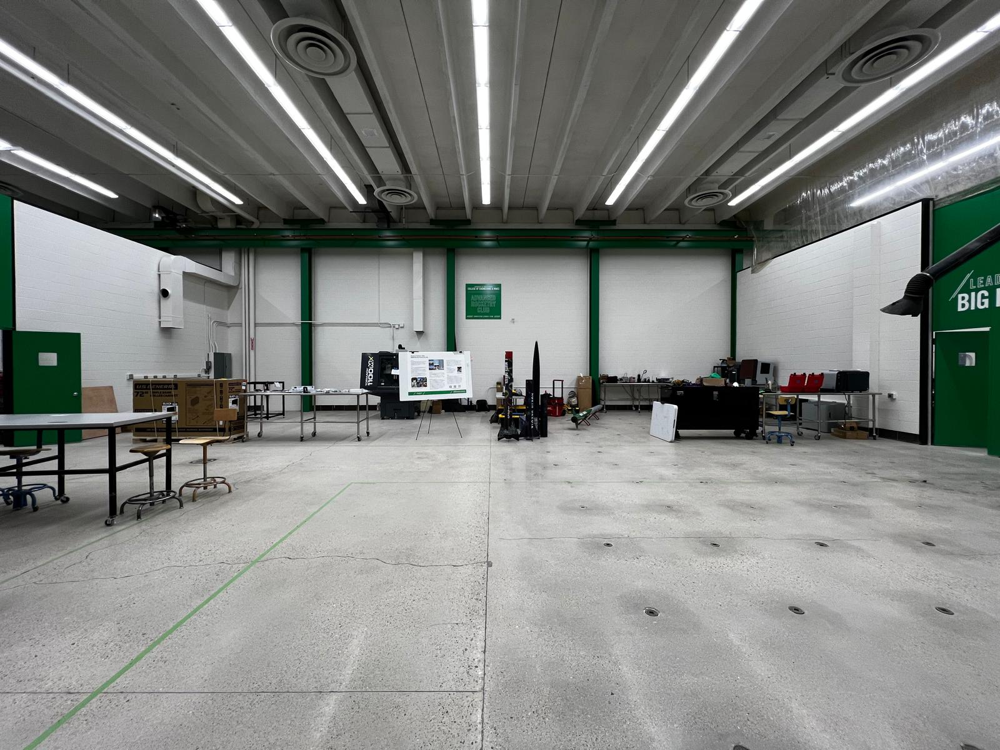
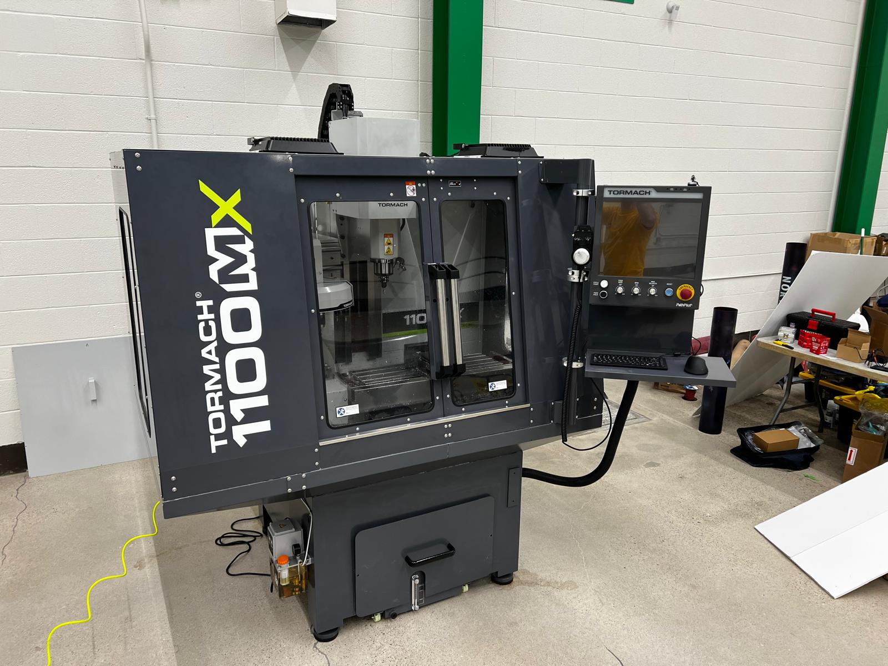
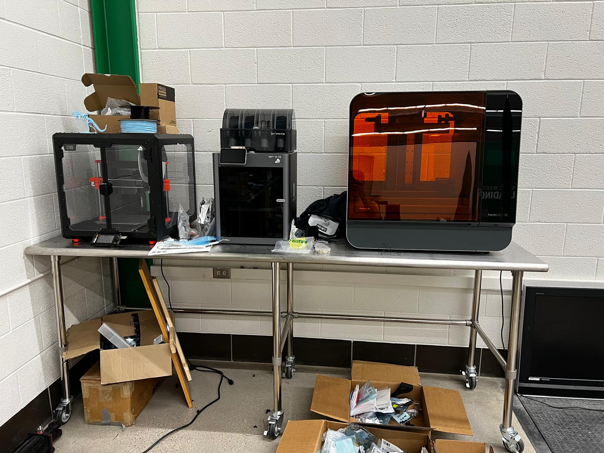

One of my proudest achievements as President of the Rocketry Club was securing funding and establishing a new lab space that broadened our capabilities and allowed us to pursue additional challenges and expand into liquid rocket engine research. Alongside the President of the University, I had traveled to California to a Liquid Symposium and helped secure $1 million of funding to go towards a rocket lab space. We were able to get lab space within the engineering department and I began working towards securing the right of students to have the manufacturing ability within our own lab space, as well as laying out and getting the facilities involved to operate all the equipment that we were obtaining. The pictures below showcase the space that we received that took up half of the room, including some of the equipment that I had picked out, including the Tormach CNC mill and a few of the 3D printers.



That allowed us to operate solely off of the club equipment versus relying on the university or personal machines. Having this lab space also allowed us to sponsor senior design projects, which led into liquid rocket engine development, starting with the test stand, which was offsite. I can unfortunately not show that here.